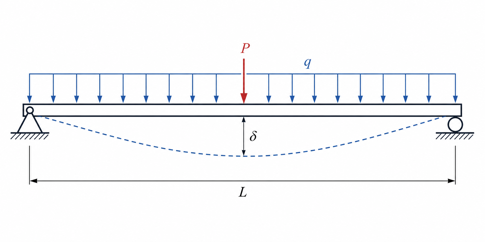
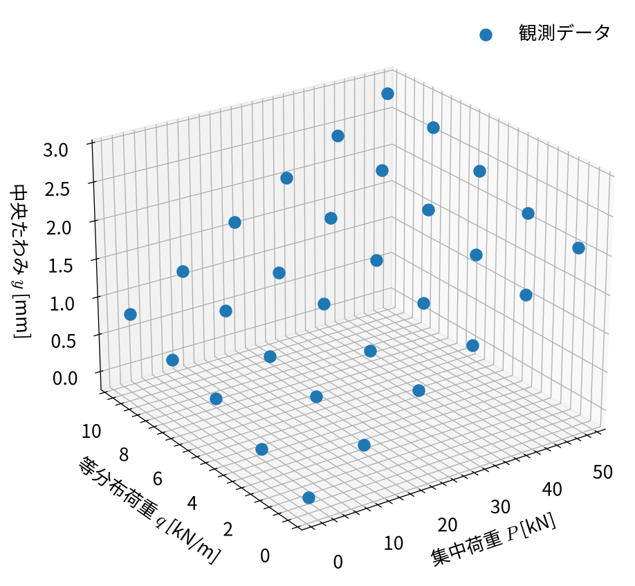
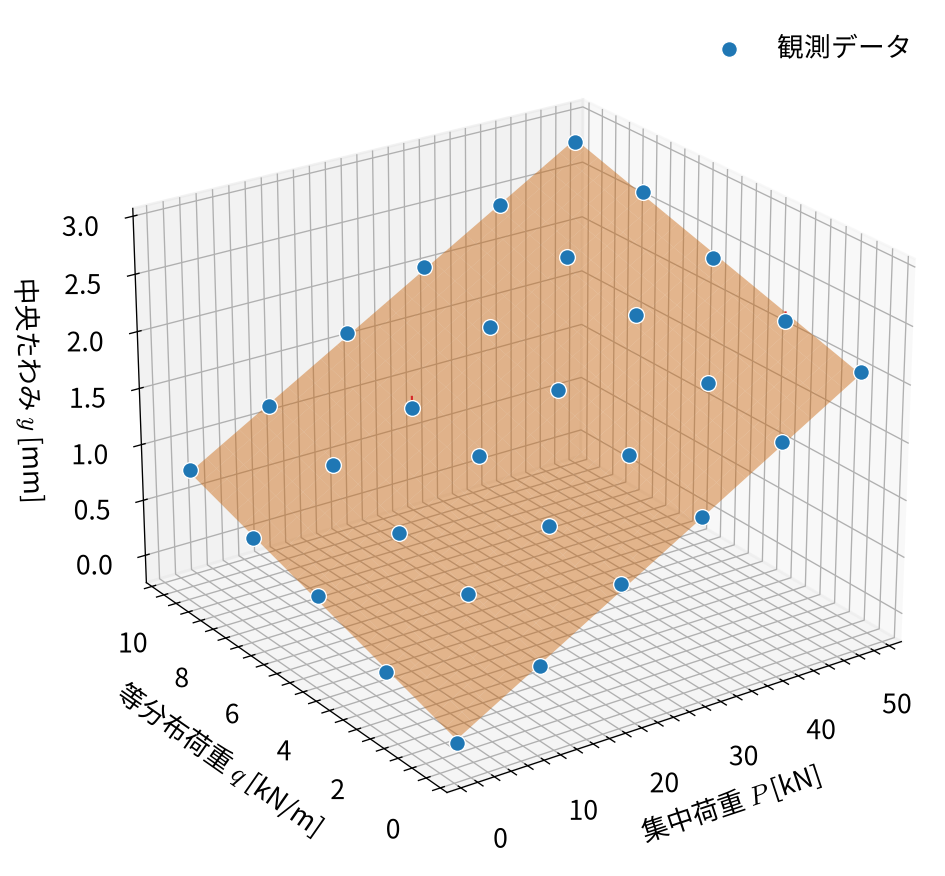
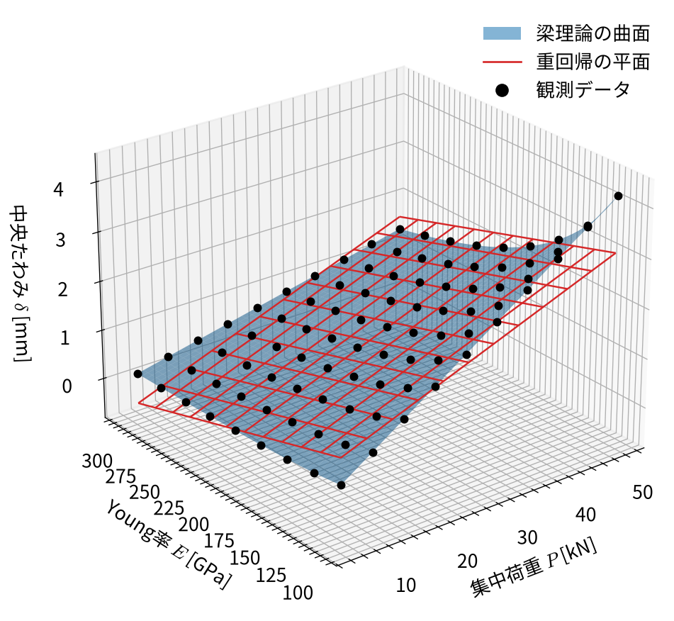

import numpy as np
import matplotlib.pyplot as plt
import scienceplots
plt.style.use(["science", "no-latex"])
plt.rcParams["font.family"] = "Noto Sans CJK JP"
plt.rcParams["mathtext.fontset"] = "cm"
plt.rcParams["axes.unicode_minus"] = False
# 梁の物性値と寸法
young_modulus = 205e9 # Young率 [Pa]
span_length = 3.0 # 支間長 [m]
section_width = 0.10 # 断面幅 [m]
section_height = 0.20 # 断面高さ [m]
second_moment = section_width * section_height**3 / 12 # [m^4]
# 集中荷重Pと等分布荷重qの組合せ
point_load_levels = np.linspace(0, 50, 6) # [kN]
distributed_load_levels = np.linspace(0, 10, 5) # [kN/m]
P_grid, q_grid = np.meshgrid(point_load_levels, distributed_load_levels)
P = P_grid.ravel()
q = q_grid.ravel()
# 梁理論による中央たわみ [mm]
deflection_from_P = (
(P * 1e3) * span_length**3
/ (48 * young_modulus * second_moment)
) * 1e3
deflection_from_q = (
5 * (q * 1e3) * span_length**4
/ (384 * young_modulus * second_moment)
) * 1e3
y_true = deflection_from_P + deflection_from_q
# 測定誤差を加えた観測値
rng = np.random.default_rng(123)
measurement_std = 0.04
y = y_true + rng.normal(0.0, measurement_std, size=y_true.size)2 重回帰
2.1 この章で学ぶこと
第1章では、1つの説明変数から目的変数を予測する単回帰を扱いました。本章では、 複数の説明変数を同時に用いる重回帰へモデルを拡張します。
本章の目的は、次の事項を理解することです。
- 複数の説明変数を用いる線形回帰モデル
- ベクトルと行列によるモデルの表現
- 平均二乗誤差を最小にするパラメータの導出
- 逆行列を用いた最小二乗解の計算
- 重回帰モデルにおける重みの解釈
重回帰で用いる
\[ \boldsymbol{w}^{\mathsf T}\boldsymbol{x}+b \]
という計算は、ニューラルネットワークを構成するニューロンの基本的な計算でもあります。
2.2 単回帰から重回帰へ
単回帰モデルは、1つの説明変数 \(x\) に対して
\[ \hat{y}=wx+b \]
と表されます。説明変数が2つの場合、モデルは
\[ \hat{y}=w_1x_1+w_2x_2+b \tag{2.1}\]
となります。一般に、説明変数が \(M\) 個ある場合の重回帰モデルは
\[ \hat{y} = \sum_{j=1}^{M}w_jx_j+b \tag{2.2}\]
と表されます。
| 記号 | 名称 | 内容 |
|---|---|---|
| \(x_j\) | \(j\) 番目の説明変数 | モデルへ入力する値 |
| \(w_j\) | \(j\) 番目の重み | \(x_j\) が予測値に及ぼす影響を表す係数 |
| \(b\) | バイアス | すべての説明変数が0のときの予測値 |
| \(y\) | 目的変数 | データとして観測された値 |
| \(\hat{y}\) | 予測値 | モデルが出力する目的変数の推定値 |
\(w_j\) は、ほかの説明変数を固定した状態で \(x_j\) が1増加したとき、予測値がどれだけ 変化するかを表します。
説明変数が2つの場合、式 2.1 は3次元空間内の平面を表します。 説明変数が3つ以上になると図として直接描くことは困難ですが、モデルは同様に 高次元空間内の超平面を表します。
2.3 ベクトルによるモデルの表現
1つのデータに含まれる説明変数と、それらに対応する重みを
\[ \boldsymbol{x} = \begin{bmatrix} x_1\\ x_2\\ \vdots\\ x_M \end{bmatrix}, \qquad \boldsymbol{w} = \begin{bmatrix} w_1\\ w_2\\ \vdots\\ w_M \end{bmatrix} \]
と定義します。このとき、式 2.2 は内積を用いて
\[ \hat{y} = \boldsymbol{w}^{\mathsf T}\boldsymbol{x}+b \tag{2.3}\]
と簡潔に表せます。\(\boldsymbol{w}^{\mathsf T}\boldsymbol{x}\) は
\[ \boldsymbol{w}^{\mathsf T}\boldsymbol{x} =w_1x_1+w_2x_2+\cdots+w_Mx_M \]
を意味します。
2.4 行列による複数データの表現
\(N\) 個の観測データがあるとします。\(i\) 番目のデータにおける \(j\) 番目の説明変数を \(x_{ij}\) とすると、すべての説明変数をまとめた行列は
\[ \mathbf{X} = \begin{bmatrix} x_{11} & x_{12} & \cdots & x_{1M}\\ x_{21} & x_{22} & \cdots & x_{2M}\\ \vdots & \vdots & \ddots & \vdots\\ x_{N1} & x_{N2} & \cdots & x_{NM} \end{bmatrix} \in\mathbb{R}^{N\times M} \]
となります。バイアスも行列演算に含めるため、\(\mathbf{X}\) の第1列に1を追加した 行列を
\[ \tilde{\mathbf{X}} = \begin{bmatrix} 1 & x_{11} & \cdots & x_{1M}\\ 1 & x_{21} & \cdots & x_{2M}\\ \vdots & \vdots & \ddots & \vdots\\ 1 & x_{N1} & \cdots & x_{NM} \end{bmatrix} \]
とします。また、バイアスと重みをまとめたパラメータベクトルを
\[ \boldsymbol{\theta} = \begin{bmatrix} b\\ w_1\\ \vdots\\ w_M \end{bmatrix} \]
とします。すると、重回帰モデルにおける予測値は
\[ \hat{\boldsymbol{y}} = \tilde{\mathbf{X}}\boldsymbol{\theta} \tag{2.4}\]
となります。
2.5 損失関数と最小二乗解
重回帰においても、単回帰と同じ平均二乗誤差を損失関数として使用できます。
\[ L(\boldsymbol{\theta}) = \frac{1}{N} \left\| \boldsymbol{y} -\tilde{\mathbf{X}}\boldsymbol{\theta} \right\|_2^2 \tag{2.5}\]
ここで、\(\|\cdot\|_2\) はベクトルのEuclid距離を用いたノルムです。 もう少し理解しやすいように、式 2.5 を成分で書けば、
\[ L(\boldsymbol{\theta}) = \frac{1}{N}\sum_{i=1}^{N} \left(y_i-\hat{y}_i\right)^2 \]
であり、第1章のMSEと同じであることが分かります。
この損失関数を行列の内積を用いて展開すると、
\[ L(\boldsymbol{\theta}) = \frac{1}{N} \left( \boldsymbol{y}^{\mathsf T}\boldsymbol{y} - 2\boldsymbol{\theta}^{\mathsf T}\tilde{\mathbf{X}}^{\mathsf T}\boldsymbol{y} + \boldsymbol{\theta}^{\mathsf T}\tilde{\mathbf{X}}^{\mathsf T}\tilde{\mathbf{X}}\boldsymbol{\theta} \right) \]
と表されます。 これを \(\boldsymbol{\theta}\) で微分すると、勾配は
\[ \nabla_{\boldsymbol{\theta}}L = \frac{2}{N} \tilde{\mathbf{X}}^{\mathsf T} \left( \tilde{\mathbf{X}}\boldsymbol{\theta} -\boldsymbol{y} \right) \tag{2.6}\]
となります。最小点では勾配が0になるため、
\[ \tilde{\mathbf{X}}^{\mathsf T} \tilde{\mathbf{X}}\boldsymbol{\theta} = \tilde{\mathbf{X}}^{\mathsf T}\boldsymbol{y} \tag{2.7}\]
が得られます。 \(\tilde{\mathbf{X}}^{\mathsf T}\tilde{\mathbf{X}}\) が逆行列をもつ場合、 最小二乗解は
\[ \boldsymbol{\theta}^* = \left( \tilde{\mathbf{X}}^{\mathsf T} \tilde{\mathbf{X}} \right)^{-1} \tilde{\mathbf{X}}^{\mathsf T}\boldsymbol{y} \tag{2.8}\]
と表されます。
2.6 例題：2種類の荷重から梁の中央たわみを予測する
重回帰の例として、中央集中荷重 \(P\) と等分布荷重 \(q\) が同時に作用する単純支持梁を 考えます。梁は線形弾性体であり、微小変形の範囲にあるものとします。

図 2.1 に示すように、支間長 \(L\) の梁全体に等分布荷重 \(q\) が作用し、 さらに梁中央に集中荷重 \(P\) が作用する条件を考えます。
梁中央のたわみ \(\delta\) は
\[ \delta = \frac{PL^3}{48EI} + \frac{5qL^4}{384EI} \tag{2.9}\]
で与えられます。\(L\)、\(E\)、\(I\) が一定であれば、\(\delta\) は \(P\) と \(q\) の線形結合です。 したがって、重回帰モデル
\[ \hat{\delta}=w_1P+w_2q+b \tag{2.10}\]
を適用できます。
| 機械学習上の変数 | この例における物理量 |
|---|---|
| \(x_1\) | 中央集中荷重 \(P\) [kN] |
| \(x_2\) | 等分布荷重 \(q\) [kN/m] |
| \(y\) | 観測された中央たわみ \(\delta\) [mm] |
| \(w_1\) | 集中荷重に対する柔性 [mm/kN] |
| \(w_2\) | 等分布荷重に対する柔性 [mm/(kN/m)] |
| \(b\) | 初期たわみや測定器のゼロ点誤差 [mm] |
2.6.1 観測データの作成
第1章と同じ鋼製の矩形断面の梁を使用します。
| 物理量 | 記号 | 設定値 |
|---|---|---|
| ヤング率 | \(E\) | \(205\ \mathrm{GPa}\) |
| 支間長 | \(L\) | \(3.0\ \mathrm{m}\) |
| 断面幅 | \(B\) | \(0.10\ \mathrm{m}\) |
| 断面高さ | \(H\) | \(0.20\ \mathrm{m}\) |
中央集中荷重と等分布荷重を複数の条件で組み合わせ、式 2.9 から理論たわみを 計算します。その後、平均0、標準偏差 \(0.04\ \mathrm{mm}\) の正規分布に従う測定誤差を 加えて観測データを作成します。
データ生成には梁理論を用いましたが、これ以降の学習でモデルに与えるのは、観測された \((P_i,q_i,y_i)\) の組だけです。
2.6.2 観測データの可視化
説明変数が2つであるため、観測データを3次元空間に表示できます。

図 2.2 では、観測点がおおむね1つの平面上に分布しています。ただし、 測定誤差が含まれるため、完全に同一平面上にはありません。
2.6.3 設計行列の作成
切片、集中荷重、等分布荷重の順に列を並べ、行列 \(\tilde{\mathbf{X}}\) を作成します。
X_tilde = np.column_stack([
np.ones_like(P),
P,
q,
])
print(f"行列の形状: {X_tilde.shape}")
print(f"目的変数の形状: {y.shape}")
print(X_tilde[:5])行列の形状: (30, 3)
目的変数の形状: (30,)
[[ 1. 0. 0.]
[ 1. 10. 0.]
[ 1. 20. 0.]
[ 1. 30. 0.]
[ 1. 40. 0.]]この例には30個の観測データと、切片を含む3個の入力列があるため、 \(\tilde{\mathbf{X}}\) の形状は \((30,3)\) です。
2.6.4 逆行列による最小二乗解の計算
式 2.8 に従い、MSEを最小にするパラメータを逆行列から求めます。 まず、方程式の係数行列 \(\tilde{\mathbf{X}}^{\mathsf T}\tilde{\mathbf{X}}\) と右辺 \(\tilde{\mathbf{X}}^{\mathsf T}\boldsymbol{y}\) を計算します。
normal_matrix = X_tilde.T @ X_tilde
normal_vector = X_tilde.T @ y
theta_opt = np.linalg.inv(normal_matrix) @ normal_vector
b_opt, w_P_opt, w_q_opt = theta_opt
y_pred = X_tilde @ theta_opt
residuals = y - y_pred
mse = np.mean(residuals**2)
rank = np.linalg.matrix_rank(X_tilde)
print(f"切片 b*: {b_opt:.5f} mm")
print(f"集中荷重の重み w1*: {w_P_opt:.5f} mm/kN")
print(f"等分布荷重の重み w2*: {w_q_opt:.5f} mm/(kN/m)")
print(f"MSE: {mse:.6f} mm²")
print(f"行列 X_tilde のランク: {rank}")切片 b*: -0.00770 mm
集中荷重の重み w1*: 0.04145 mm/kN
等分布荷重の重み w2*: 0.07903 mm/(kN/m)
MSE: 0.001232 mm²
行列 X_tilde のランク: 3X_tilde.T は転置行列\(\tilde{\mathbf{X}}^{\mathsf T}\)、np.linalg.inv(normal_matrix) は \((\tilde{\mathbf{X}}^{\mathsf T}\tilde{\mathbf{X}})^{-1}\) に対応します。また、@ は 行列積を表す演算子です。したがって、パラメータを求めるコードは 式 2.8、X_tilde @ theta_opt は 式 2.4 に対応します。
この計算で逆行列が存在するには、拡大設計行列\(\tilde{\mathbf{X}}\)が列フルランク（すべての列ベクトルが1次独立である状態）である必要があります。 この例では列数が3、ランクも3であるため、逆行列を用いて一意な解を求められます。
2.6.5 回帰平面と残差
学習によって得られたモデルを平面として表示し、観測データと比較します。

図 2.3 の橙色の平面が重回帰モデルの予測、青い点が観測値です。 各観測点と回帰平面を結ぶ赤い線分が残差を表します。最小二乗法は、これらの残差の 二乗和が最小になる平面を求めています。
2.6.6 梁理論から得られる係数との比較
式 2.9 から、各荷重に対する理論上の係数を計算できます。
w_P_theory = (
span_length**3 / (48 * young_modulus * second_moment)
) * 1e6
w_q_theory = (
5 * span_length**4 / (384 * young_modulus * second_moment)
) * 1e6
print("集中荷重に対する係数")
print(f" 理論値: {w_P_theory:.5f} mm/kN")
print(f" 学習値: {w_P_opt:.5f} mm/kN")
print("等分布荷重に対する係数")
print(f" 理論値: {w_q_theory:.5f} mm/(kN/m)")
print(f" 学習値: {w_q_opt:.5f} mm/(kN/m)")集中荷重に対する係数
理論値: 0.04116 mm/kN
学習値: 0.04145 mm/kN
等分布荷重に対する係数
理論値: 0.07717 mm/(kN/m)
学習値: 0.07903 mm/(kN/m)学習には梁理論の係数を与えていません。それにもかかわらず、十分に異なる荷重条件を 観測することで、重回帰は理論値に近い重みをデータから推定できます。推定値が理論値と 完全には一致しないのは、観測データに測定誤差が含まれているためです。
2.7 重回帰を利用する際の注意点
重回帰では説明変数を増やせますが、変数を追加すれば常に適切なモデルになるわけでは ありません。特に、次の点に注意が必要です。
2.7.1 説明変数間の相関
説明変数同士に強い線形関係がある状態を多重共線性と呼びます。多重共線性があると、 異なる重みの組合せが類似した予測を与えるため、個々の重みの推定が不安定になります。
2.7.2 学習データへの適合と未知データの予測
説明変数を増やすと、一般に学習データに対するMSEは小さくなります。しかし、学習データに よく適合することと、未知データを正確に予測できることは同じではありません。未知データに 対する性能を評価する方法は、後の章で扱います。
2.8 重回帰では表現できない関係
ここまでの例では、中央たわみが集中荷重 \(P\) と等分布荷重 \(q\) の線形結合で表されるため、 重回帰を適用できました。しかし、説明変数を増やしても、重回帰で任意の関係を表現できる わけではありません。
例として、断面形状と支間長を固定した単純支持梁に中央集中荷重 \(P\) を作用させ、Young率 \(E\) が異なる場合を考えます。梁中央のたわみは
\[ \delta = \frac{PL^3}{48EI} = C\frac{P}{E}, \qquad C=\frac{L^3}{48I} \tag{2.11}\]
と表されます。\(P\) と \(E\) をそのまま説明変数とする重回帰モデルは
\[ \hat{\delta}=w_1P+w_2E+b \tag{2.12}\]
です。式 2.12 は \(P\)–\(E\)–\(\delta\) 空間内の平面を表します。一方、 式 2.11 は \(P/E\) に比例する曲面であり、\(E\) に対して反比例します。 したがって、重み \(w_1,w_2\) と切片 \(b\) をどのように選んでも、この曲面全体を1枚の 平面で表すことはできません。
2.8.1 重回帰で表現できないことを確かめる
PとEが説明変数となる重回帰モデルを構築して、図示することで、重回帰では表現できないことを確認できます。 ここでは、集中荷重を \(5\)–\(50\ \mathrm{kN}\)、ヤング率を \(100\)–\(300\ \mathrm{GPa}\) の範囲で 変化させます。
# 集中荷重とYoung率の組合せ
P_nonlinear_levels = np.linspace(5, 50, 10) # [kN]
E_nonlinear_levels = np.linspace(100, 300, 9) # [GPa]
P_nonlinear_grid, E_nonlinear_grid = np.meshgrid(
P_nonlinear_levels,
E_nonlinear_levels,
)
P_nonlinear = P_nonlinear_grid.ravel()
E_nonlinear = E_nonlinear_grid.ravel()
# 梁理論による中央たわみ（測定誤差なし）
y_nonlinear = (
(P_nonlinear * 1e3) * span_length**3
/ (48 * (E_nonlinear * 1e9) * second_moment)
) * 1e3
# PとEを説明変数とする重回帰
X_nonlinear = np.column_stack([
np.ones_like(P_nonlinear),
P_nonlinear,
E_nonlinear,
])
normal_matrix_nonlinear = X_nonlinear.T @ X_nonlinear
normal_vector_nonlinear = X_nonlinear.T @ y_nonlinear
theta_nonlinear = np.linalg.inv(normal_matrix_nonlinear) @ normal_vector_nonlinear
y_nonlinear_pred = X_nonlinear @ theta_nonlinear
residuals_nonlinear = y_nonlinear - y_nonlinear_pred
mse_nonlinear = np.mean(residuals_nonlinear**2)
print(f"重回帰モデルのMSE: {mse_nonlinear:.6f} mm²")
print(f"残差の最大絶対値: {np.max(np.abs(residuals_nonlinear)):.5f} mm")重回帰モデルのMSE: 0.086464 mm²
残差の最大絶対値: 1.12059 mm2.8.2 理論曲面と重回帰平面の比較
図 2.4 に、梁理論による曲面と、重回帰で学習された平面を重ねて 示します。
from matplotlib.lines import Line2D
from matplotlib.patches import Patch
P_surface_nonlinear, E_surface_nonlinear = np.meshgrid(
np.linspace(P_nonlinear.min(), P_nonlinear.max(), 45),
np.linspace(E_nonlinear.min(), E_nonlinear.max(), 45),
)
y_surface_theory = (
(P_surface_nonlinear * 1e3) * span_length**3
/ (48 * (E_surface_nonlinear * 1e9) * second_moment)
) * 1e3
y_surface_linear = (
theta_nonlinear[0]
+ theta_nonlinear[1] * P_surface_nonlinear
+ theta_nonlinear[2] * E_surface_nonlinear
)
fig = plt.figure(figsize=(7.6, 5.8))
ax = fig.add_subplot(111, projection="3d", computed_zorder=False)
ax.plot_surface(
P_surface_nonlinear,
E_surface_nonlinear,
y_surface_theory,
color="tab:blue",
alpha=0.55,
linewidth=0,
zorder=1,
)
ax.plot_wireframe(
P_surface_nonlinear,
E_surface_nonlinear,
y_surface_linear,
color="tab:red",
rstride=4,
cstride=4,
linewidth=0.9,
zorder=2,
)
ax.scatter(
P_nonlinear,
E_nonlinear,
y_nonlinear,
color="black",
s=12,
depthshade=False,
zorder=3,
)
ax.set_xlabel(r"集中荷重 $P$ [kN]")
ax.set_ylabel(r"Young率 $E$ [GPa]")
ax.set_zlabel(r"中央たわみ $\delta$ [mm]")
ax.view_init(elev=25, azim=-128)
ax.legend(handles=[
Patch(facecolor="tab:blue", alpha=0.55, label="梁理論の曲面"),
Line2D([0], [0], color="tab:red", label="重回帰の平面"),
Line2D([0], [0], marker="o", color="black", linestyle="none", label="観測データ"),
])
plt.show()
図 2.4 から、限定された範囲では重回帰平面が理論曲面を近似できるものの、 両者は一致しないことが分かります。ここでは測定誤差を加えていないため、残差の原因は データのばらつきではなく、重回帰モデルが \(P/E\) という非線形な関係を表現できないことに あります。
なお、\(P/E\) を新しい説明変数として人があらかじめ作れば、
\[ x_1=\frac{P}{E}, \qquad \hat{\delta}=w_1x_1+b \]
として線形回帰を適用できます。このように、元の説明変数を変換してモデルが扱いやすい 変数を作ることを特徴量設計（feature engineering）と呼びます。しかし、対象の関係が 未知である場合、人が適切な変換をあらかじめ決められるとは限りません。
こうした線形回帰の適用とかが難しい場合に用いることができる回帰手法として、次章で説明する多層パーセプトロン（Multilayer Perceptron; MLP）があります。
2.9 まとめ
- 重回帰は、複数の説明変数から1つの目的変数を予測する線形モデルである。
- モデルは \(\hat{y}=\boldsymbol{w}^{\mathsf T}\boldsymbol{x}+b\) と表される。
- 複数データの予測は \(\hat{\boldsymbol{y}}=\tilde{\mathbf{X}}\boldsymbol{\theta}\) と表せる。
- MSEの勾配を0とおくことで正規方程式が得られる。
- 説明変数 \(x\) と目的変数 \(y\) の関係が非線形な場合、重回帰では関係全体を表現できない。
- 非線形な活性化関数をもつMLPは、平面では表せない曲がった応答面を表現できる。
2.10 付録：完全な実行コード
本章で解説した重回帰の処理（複数荷重データの生成、行列計算・正規方程式によるパラメータ同定、および3次元回帰平面の可視化）を、単一のPythonファイル（.py）としてそのまま実行できる完全なコードです。
完全なPythonスクリプトを表示
import matplotlib.pyplot as plt
import numpy as np
plt.rcParams["font.family"] = "Noto Sans CJK JP"
plt.rcParams["axes.unicode_minus"] = False
# -------------------------------------------------------------
# 1. 梁の諸元と理論値の計算
# -------------------------------------------------------------
span_length = 3.0 # 支間長 L [m]
young_modulus = 205e9 # Young率 E [Pa]
section_width = 0.10 # 断面幅 [m]
section_height = 0.20 # 断面高さ [m]
second_moment = section_width * section_height**3 / 12 # [m^4]
# 集中荷重 P [kN] および等分布荷重 q [kN/m] に対する理論係数 [mm/kN], [mm/(kN/m)]
w_P_theory = (span_length**3 / (48 * young_modulus * second_moment)) * 1e6
w_q_theory = (5 * span_length**4 / (384 * young_modulus * second_moment)) * 1e6
print(f"理論係数 w_P: {w_P_theory:.5f} mm/kN")
print(f"理論係数 w_q: {w_q_theory:.5f} mm/(kN/m)")
# -------------------------------------------------------------
# 2. 観測データの生成（集中荷重 P と 等分布荷重 q）
# -------------------------------------------------------------
point_load_levels = np.linspace(0, 50, 6) # [kN]
distributed_load_levels = np.linspace(0, 10, 5) # [kN/m]
P_grid, q_grid = np.meshgrid(point_load_levels, distributed_load_levels)
P = P_grid.ravel()
q = q_grid.ravel()
y_true = w_P_theory * P + w_q_theory * q
rng = np.random.default_rng(123)
noise = rng.normal(0.0, 0.04, size=y_true.size)
y = y_true + noise # 中央たわみ [mm]
# -------------------------------------------------------------
# 3. 拡大設計行列と正規方程式によるパラメータ推定
# -------------------------------------------------------------
# 拡大設計行列 X_tilde = [1, P, q] (形状: N x 3)
X_tilde = np.column_stack([np.ones_like(P), P, q])
# 正規方程式 (X^T X) theta = X^T y を解く
normal_matrix = X_tilde.T @ X_tilde
normal_vector = X_tilde.T @ y
theta_opt = np.linalg.inv(normal_matrix) @ normal_vector
b_opt = theta_opt[0]
w_P_opt = theta_opt[1]
w_q_opt = theta_opt[2]
y_pred = X_tilde @ theta_opt
mse_opt = np.mean((y - y_pred) ** 2)
print("\n--- 重回帰の学習結果 ---")
print(f"推定された切片 b*: {b_opt:.5f} mm")
print(
f"推定された係数 w_P*: {w_P_opt:.5f} mm/kN (理論値誤差: {abs(w_P_opt - w_P_theory):.5f})"
)
print(
f"推定された係数 w_q*: {w_q_opt:.5f} mm/(kN/m) (理論値誤差: {abs(w_q_opt - w_q_theory):.5f})"
)
print(f"最小平均二乗誤差 MSE: {mse_opt:.6f} mm^2")
# -------------------------------------------------------------
# 4. 3次元回帰平面と観測データのプロット
# -------------------------------------------------------------
P_surf, q_surf = np.meshgrid(
np.linspace(P.min(), P.max(), 25),
np.linspace(q.min(), q.max(), 25),
)
y_surf = b_opt + w_P_opt * P_surf + w_q_opt * q_surf
fig = plt.figure(figsize=(8.0, 6.0))
ax = fig.add_subplot(111, projection="3d")
ax.plot_surface(P_surf, q_surf, y_surf, color="tab:orange", alpha=0.45, zorder=1)
ax.scatter(P, q, y, color="tab:blue", s=40, edgecolors="white", label="観測データ", zorder=3)
# 残差（誤差）の赤い線分を描画
for P_i, q_i, y_obs, y_fit in zip(P, q, y, y_pred):
ax.plot(
[P_i, P_i], [q_i, q_i], [y_fit, y_obs], color="tab:red", linewidth=0.8, zorder=2
)
ax.set_xlabel("集中荷重 $P$ [kN]")
ax.set_ylabel("等分布荷重 $q$ [kN/m]")
ax.set_zlabel("中央たわみ $y$ [mm]")
ax.set_title("重回帰モデルによるたわみ平面の推定と残差")
ax.view_init(elev=24, azim=-125)
ax.legend()
plt.tight_layout()
plt.show()